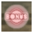
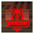

8
Objetos
Cuando derrotas a enemigos, destruyes determinados obstáculos o estás cerca de un peligro, pueden aparecer los siguientes objetos o iconos:
Vida
Restaura 30 unidades del medidor de vida en el nivel de dificultad EASY (fácil), 20 unidades en el NORMAL y 10 en el HARD (difícil).
Tiempo
Suma 30 segundos al tiempo restante.
Punto
Aumenta tu puntuación. Si consigues recoger más de uno sin recibir daños, aumentará la bonificación de puntos que recibirás de cada uno.

Bonificación
Cada uno de estos iconos cuenta como un enemigo derrotado y además te suma 50,000 puntos.

Peligro
Te señala un punto en el que se ha colocado una bomba o en el que caerá un objeto que puede causarte daño.